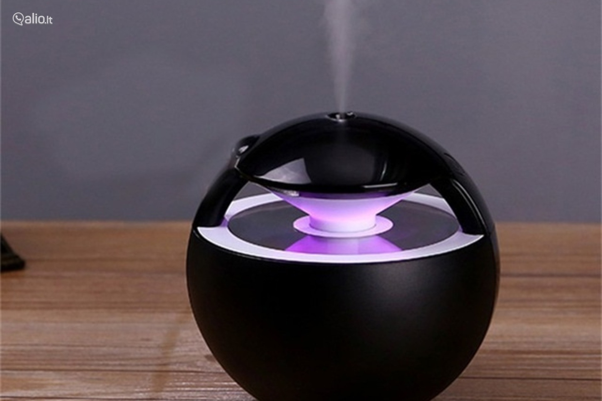

Oro drėkintuvai | Oro drėkintuvas namie ar biure - OROsprendimai
2020.10.29 10:37
VILNIUS , Algirdo g. 75 TEL.: +370 (695) 57856 KAUNAS , Partizanų g. 27 TEL.: +370 (678) 80313 Informacija Straipsniai Video Apie mus Pirkimo taisyklės Garantijos ir grąžinimas Pristatymas ir apmokėjimas Privatumo politika Įrangos nuoma Kontaktai | Pirkinių krepšelis ( 0 ) Toggle navigation 0 Straipsniai Video Apie mus Pirkimo taisyklės Garantijos ir grąžinimas Pristatymas ir apmokėjimas Privatumo politika Įrangos nuoma Kontaktai VILNIUS , Algirdo g. 75 TEL.: +370 (695) 57856 KAUNAS , Partizanų g. 27 TEL.: +370 (678) 80313 Prekių kategorijos Oro sausintuvai Oro drėkintuvai Oro valytuvai Mobilūs kondicionieriai Kitos prekės
Oro drėkintuvai
Oro drėkintuvai padės Jums atstatyti išsausėjusį patalpos orą į komfortabilias sąlygas. Šaltuoju metų laiku šildymas bei vėdinimas stipriai džiovina orą. Sausas oras pirmiausia paveikia žmones, kurie miega, gyvena, ar dirba šiose patalpose. Keli pagrindiniai sauso oro požymiai: nuolatos džiūstanti burna ir nosies gleivinė; nesibaigianti sloga ar gerklės perštėjimas; sausos ir skaudančios akys; pleiskanojanti oda; ištisai juntamas nuovargis ir kita. Tuo pačiu metu išsausėjęs oras gadina baldus, o ypač medienos dalis. Tačiau papildomai drėkindami orą ir užtikrindami komfortišką rekomenduojamą 40-60% drėgmės lygį išvengsite šių problemą arba bent jau kiek įmanoma sumažinsite jų poveikį. (Mažiau) Oro drėkintuvai padės Jums atstatyti išsausėjusį patalpos orą į komfortabilias sąlygas. Šaltuoju metų laiku šildymas bei vėdinimas stipriai džiovina orą. Sausas oras pirmiausia paveikia žmones, kurie miega, gyvena, ar dirba šiose patalpose. Keli pagrindiniai sauso oro požymiai: nuolatos džiūstanti burna... (Plačiau) Greitas oro drėkintuvų pasirinkimas Atlikite sekantį pasirinkimą Noriu informacijos apie oro drėkinimą Parekomenduokite man oro drėkintuvą Video apie oro drėkinimą Straipsniai apie oro drėkinimą Konsultuokitės su mumis 1. Kur naudosite Drėkintuvą? 2. Namuose Ofise Miegamojo kambaryje Svetainėje Iki 50 m 2 patalpai Virš 50 m 2 patalpai HELOS oro drėkintuvas (STYLIES) Ypač mažos energijos sąnaudos Nepalieka kalkių nuosėdų Gali garinti eterinius aliejus 149 € 159 € Plačiau Užsakyti TITAN ultragarsinis oro drėkintuvas... Tyliai drėkina Automatinė drėgmės lygio kontrolė Karštų garų drėkinimo funkcija 159 € Plačiau Užsakyti Kiti siūlomi variantai Oro drėkintuvas ALAZE Stylies 99 € Užsakyti Plačiau LEONIS ultragarsinis oro drėkintuva... 139 € Užsakyti Plačiau MIRA oro drėkintuvas (STYLIES) 129 € 179 € Užsakyti Plačiau HERA ultragarsinis oro drėkintuvas ... 199 € Užsakyti Plačiau AQUARIUS Oro drėkintuvas-valytuvas ... 3 metai garantija! Nepalieka kalkių nuosėdų Nereikia keisti filtrų 299 € 329 € Plačiau Užsakyti HELOS oro drėkintuvas (STYLIES) Ypač mažos energijos sąnaudos Nepalieka kalkių nuosėdų Gali garinti eterinius aliejus 149 € 159 € Plačiau Užsakyti Kiti siūlomi variantai MIRA oro drėkintuvas (STYLIES) 129 € 179 € Užsakyti Plačiau H680 Oro valytuvas drėkintuvas (BON... 859 € 888 € Užsakyti Plačiau ROBERT Oro drėkintuvas-valytuvas (S... 459 € 484 € Užsakyti Plačiau PCMH45 Oro drėkintuvas (HALE) 499 € Užsakyti Plačiau AQUARIUS Oro drėkintuvas-valytuvas ... Nepalieka kalkių nuosėdų Tylus veikimas 3 metai garantija! 299 € 329 € Plačiau Užsakyti B125 oro drėkintuvas (BRUNE) Našus drėkinimas Nepalieka kalkių nuosėdų Mažos energijos sąnaudos 199 € Plačiau Užsakyti Kiti siūlomi variantai ROBERT Oro drėkintuvas-valytuvas (S... 459 € 484 € Užsakyti Plačiau PCMH45 Oro drėkintuvas (HALE) 499 € Užsakyti Plačiau H680 Oro valytuvas drėkintuvas (BON... 859 € 888 € Užsakyti Plačiau HELOS oro drėkintuvas (STYLIES) 149 € 159 € Užsakyti Plačiau PCMH45 Oro drėkintuvas (HALE) Ypač efektyvus oro drėkinimas Galima prijungti tiesioginį vandens tiekimą Didelė vandens talpa 499 € Plačiau Užsakyti H680 Oro valytuvas drėkintuvas (BON... Su HEPA filtru oro valymui Mažos el. energijos sąnaudos Gali garinti eterinius aliejus 859 € 888 € Plačiau Užsakyti Kiti siūlomi variantai B250 oro drėkintuvas (BRUNE) 999 € Išparduotas Plačiau ROBERT Oro drėkintuvas-valytuvas (S... 459 € 484 € Užsakyti Plačiau B125 oro drėkintuvas (BRUNE) 199 € Užsakyti Plačiau B500 Professional oro drėkintuvas (... 3,499 € Išparduotas Plačiau Suskleisti Oro drėkintuvai Aromatinis žele AUTUMN kvapų garintuvui ELARA (STYLIES) Gamintojas: Stylies (Šveicarija) 9 €Kvapas: AUTUMN - Cedar & Sandalwood
Aromatinis žele SPRING kvapų garintuvui ELARA (STYLIES) Gamintojas: Stylies (Šveicarija) 9 €Kvapas: SPRING - Green Tea
Aromatinis žele SUMMER kvapų garintuvui ELARA (STYLIES) Gamintojas: Stylies (Šveicarija) 9 €Kvapas: SUMMER - Green Apple
Aromatinis žele WINTER kvapų garintuvui ELARA (STYLIES) Gamintojas: Stylies (Šveicarija) 9 €Kvapas: WINTER - Ginger
HEPA filtras drėkintuvui (MEACO) Gamintojas: MEACO (Didžioji Britanija) 9 €Senesnės versijos modeliui MIST DELUXE
Vandens nukalkinimo filtras (MEACO) Gamintojas: MEACO (Didžioji Britanija) 9 €Senesnės versijos MIST STANDARD ir MIST DELUXE drėkintuvams
Nukalkinimo filtras MJS401/601 (HACE) Gamintojas: HACE (Švedija) 10 €Modeliui MJS401 ir MJS601
Nukalkinimo filtras MJS501 (HACE) Gamintojas: HACE (Švedija) 13 €Modeliui MJS501
7417 CalcOFF nukalkintojas (BONECO) Gamintojas: Boneco (Šveicarija) 14 €Nukalkintojas visiems drėkintuvams.
170606 Drėgmės matuoklis termometras Gamintojas: Bioterm (Lenkija) 15 € Gera kaina! Perkamiausias!Vidaus drėgmės matuoklis ir termometras
DURGOL nukalkinimo ir plovimo skystis (STADLER FORM) Gamintojas: StadlerFrom (Šveicarija) 15 €Tinkamas visiems oro drėkintuvų modeliams
Drėkinimo filtrai oro drėkintuvams Stylies Gamintojas: Stylies (Šveicarija) 17 €Pakuotėje 2 filtrai.
Modeliams: ALAZE, CARINA, ORION, HELOS, MIRA, OSKAR
170603 Drėgmės matuoklis termometras Gamintojas: Bioterm (Lenkija) 19 €Vidaus drėgmės matuoklis ir termometras
Filtrai oro drėkintuvui OSKAR (STADLER FORM) Gamintojas: StadlerFrom (Šveicarija) 19 €Pakuotėje 2 filtrai.
Tinka STYLIES modeliams
SELINA Little Drėgmės matuoklis termometras (STADLER FORM) Gamintojas: StadlerFrom (Šveicarija) 19 € Naujiena!Vidaus drėgmės matuoklis ir termometras;
Juodos arba baltos spalvos
WHG-1 Drėgmės matuoklis termometras (Wood's) Gamintojas: Wood's (Švedija) 19 €Vidaus drėgmės matuoklis ir termometras
Nukalkinimo filtras ultragarsiniams drėkintuvams (STYLIES) Gamintojas: Stylies (Šveicarija) 20 €Modeliams LEONIS, TITAN, HERA, HYDRA, AQUILA, LIBRA, MIRA ir kt.
5920 Filtras drėkintuvui (BONECO) Gamintojas: Boneco (Šveicarija) 23 €Modeliui E2251.
A250 Nukalkinimo filtras (BONECO) Gamintojas: Boneco (Šveicarija) 23 €Tinka Boneco ir Air-O-Swiss ultragarsiniams drėkintuvams
Nukalkinimo filtras ultragarsiniams drėkintuvams (STADLER FORM) Gamintojas: StadlerFrom (Šveicarija) 23 €Modeliams ANTON, JACK, EVA, MIRA, LEONIS, LIBRA, AQUILA, HYDRA, TITAN, HERA ir kt.
Jonizuotas sidabro kubelis (STYLIES) Gamintojas: Stylies (Šveicarija) 25 €Tinkamas visiems drėkintuvų modeliams
FZY30MFE drėkintuvo filtras (SHARP) Gamintojas: SHARP (Japonija) 29 € 59 €Modeliui KC-930 SHARP
Jonizuotas sidabro kubelis (STADLER FORM) Gamintojas: StadlerFrom (Šveicarija) 29 €Tinkamas visiems drėkintuvų modeliams
Medienos korpuso detalės drėkintuvui Meaco Gamintojas: MEACO (Didžioji Britanija) 29 €Pakuotėje - Drėkintuvo viršus ir 4 kojelės,
Oro drėkintuvo modeliui MIST DELUXE 2020 Meaco
Nukalkinimo filtro granulės (STYLIES) Gamintojas: Stylies (Šveicarija) 29 €Ultragarsiniams drėkintuvams STYLIES
Taip pat tinka BONECO, StadlerForm ir AOS
SELINA Drėgmės matuoklis termometras (STADLER FORM) Gamintojas: StadlerFrom (Šveicarija) 33 €Vidaus drėgmės matuoklis ir termometras;
Juodos arba baltos spalvos
Sidabro lazdelė (BONECO) Gamintojas: Boneco (Šveicarija) 34 €Skirta daugeliui BONECO modelių
Filtrai oro drėkintuvui OSKAR BIG (STADLER FORM) Gamintojas: StadlerFrom (Šveicarija) 36 €Pakuotėje 4 filtrai
FZC70DFE Kvapų naikinimo filtras (SHARP) Gamintojas: SHARP (Japonija) 39 € 59 €Modeliams KC-840 SHARP
HEPA - Aktyvios anglies filtras Meaco Gamintojas: MEACO (Didžioji Britanija) 39 €Pakuotėje - 3 vnt.
Oro drėkintuvo modeliui MIST DELUXE 2020 Meaco
SS-7002 Drėgmės matuoklis termometras (Wood's) Gamintojas: Wood's (Švedija) 39 €Vidaus drėgmės matuoklis ir termometras
Vandens nukalkinimo filtrai Meaco Gamintojas: MEACO (Didžioji Britanija) 39 €Pakuotėje - 3 vnt.
Oro drėkintuvo modeliui MIST DELUXE 2020 Meaco
Drėkinimo filtras modeliui H680 (BONECO) Gamintojas: Boneco (Šveicarija) 40 € ATLAS kelioninis oro drėkintuvas (STYLIES) Gamintojas: Stylies (Šveicarija) 49 €Patalpoms iki 10 m 2 ,
Našumas iki 80 ml/val,
Ultragarsinis
FZC100DFE Kvapų naikinimo filtras (SHARP) Gamintojas: SHARP (Japonija) 49 € 59 €Modeliams KC-850 SHARP
FZY30SFE HEPA filtras (SHARP) Gamintojas: SHARP (Japonija) 49 € 89 €Modeliams FU-Y30 ir KC-930 SHARP
HEPA+aktyvios anglies filtras modeliui AW600 (WINIX) Gamintojas: Winix (P. Korėja) 49 €Kombinuotas HEPA ir aktyvios aglies filtras.
LUNA Kvapų garintuvas (STYLIES) Gamintojas: Stylies (Šveicarija) 49 €Našumas - 10 ml/val,
Ultragarsinis
MJS-401 Oro drėkintuvas (HACE) Gamintojas: HACE (Švedija) 49 € Gera kaina!Patalpoms iki 40 m 2 ,
Našumas iki 300 ml/val,
Ultragarsinis
B125 drėkinimo filtrų rinkinys (BRUNE) Gamintojas: Brune (Vokietija) 59 € 3 komplektai pakuotėjeFiltrų komplektas (3 vnt.) oro drėkintuvui B125 Brune
ELARA Kvapų garintuvas (STYLIES) Gamintojas: Stylies (Šveicarija) 59 €Sauso kvėpinimo
FZA61MFR Drėkintuvo filtras (SHARP) Gamintojas: SHARP (Japonija) 59 € 99 €Modeliams KC-A40, KC-A50, KC-A60 SHARP
FZC100MFE Drėkintuvo filtras (SHARP) Gamintojas: SHARP (Japonija) 59 € 89 €Modeliams KC-840, KC-850, KC-860 SHARP
CARINA oro drėkintuvas (STYLIES) Gamintojas: Stylies (Šveicarija) 69 € 3 metų garantija!Patalpoms iki 35 m 2 ,
Našumas iki 250 ml/val,
Šaltų garų
Drėkinimo filtras modeliui PCMH45 (HALE) Gamintojas: HACE (Švedija) 69 €Modeliui PCMH45
ELARA Kvapų garintuvo + aromatinių želė rinkinys (STYLIES) Gamintojas: Stylies (Šveicarija) 69 € 95 €Sauso kvėpinimo;
Komplekte 4 kvapai
FZC150DFE Kvapų naikinimo filtras (SHARP) Gamintojas: SHARP (Japonija) 69 €Modeliams KC-860 SHARP
AQUILA ultragarsinis oro drėkintuvas (STYLIES) Gamintojas: Stylies (Šveicarija) 79 € 3 metų garantija!Patalpoms iki 25 m 2 ,
Našumas iki 160 ml/val,
Ultragarsinis
Produktų apžvalgos - pirkimo gidas
Šaltų garų drėkintuvai Ultragarsiniai oro drėkintuvai Oro drėkintuvai - Oro plovyklės Oro drėkintuvas ALAZE Stylies Oro drėkintuvas AQUARIUS Stylies HEPA filtras modeliui H680 (BONECO) Gamintojas: Boneco (Šveicarija) 79 €Modeliui H680 BONECO
LIBRA ultragarsinis oro drėkintuvas (STYLIES) Gamintojas: Stylies (Šveicarija) 89 € 3 metų garantija!Patalpoms iki 45 m 2 ,
Našumas iki 300 ml/val,
Ultragarsinis
Oro drėkintuvas ALAZE Stylies Gamintojas: Stylies (Šveicarija) 99 € 3 metų garantija!Patalpoms iki 40 m 2 ,
Našumas iki 280 ml/val,
Tipas - šaltų garų drėkintuvas
Video apžvalga FZC70HFE HEPA filtras (SHARP) Gamintojas: SHARP (Japonija) 119 € 139 €Modeliams KC-840 SHARP
HYDRA ultragarsinis oro drėkintuvas (STYLIES) Gamintojas: Stylies (Šveicarija) 119 € 3 metų garantija!Patalpoms iki 60 m 2 ,
Našumas iki 420 ml/val,
Ultragarsinis
ORION oro drėkintuvas STYLIES Gamintojas: Stylies (Šveicarija) 119 € 3 metų garantija! Rekomenduojame!Patalpoms iki 50 m 2 ,
Našumas iki 350 ml/val,
Šaltų garų; Galimybė naudoti eterinius aliejus
Video apžvalga Oro drėkintuvas MJS-601 su aromaterapija HACE Gamintojas: HACE (Švedija) 119 € Su jonizavimu ir aromaterapija!Patalpoms iki 40 m 2 ,
Našumas iki 300 ml/val,
Ultragarsinis; Galimybė naudoti eterinius aliejus
TAURUS oro drėkintuvas (STYLIES) Gamintojas: Stylies (Šveicarija) 119 € 3 metų garantija!Patalpoms iki 70 m 2 ,
Našumas iki 500 ml/val,
Karštų garų
ORION oro drėkintuvo komplektas (STYLIES) Gamintojas: Stylies (Šveicarija) 125 € 136 € Papildomas drėkinimo filtrų komplektas!Patalpoms iki 50 m 2 ,
Našumas iki 350 ml/val,
Šaltų garų; Galimybė naudoti eterinius aliejus
Video apžvalga FZC100HFE HEPA filtras (SHARP) Gamintojas: SHARP (Japonija) 129 € 149 €Modeliams KC-850 SHARP
MIRA oro drėkintuvas (STYLIES) Gamintojas: Stylies (Šveicarija) 129 € 179 € Su ekraneliu! 3 metų garantija! Labai gera kaina!Patalpoms iki 50 m 2 ,
Našumas iki 350 ml/val,
Šaltų garų; Galimybė naudoti eterinius aliejus
SIRIUS oro drėkintuvas (STYLIES) Gamintojas: Stylies (Šveicarija) 129 € 3 metų garantija!Patalpoms iki 45 m 2 ,
Našumas iki 350 ml/val,
Karštų garų
MIRA oro drėkintuvo komplektas (STYLIES) Gamintojas: Stylies (Šveicarija) 135 € 146 € Papildomas drėkinimo filtrų komplektas!Patalpoms iki 50 m 2 ,
Našumas iki 350 ml/val,
Šaltų garų; Galimybė naudoti eterinius aliejus
EVA Little ultragarsinis oro drėkintuvas (STADLER FORM) Gamintojas: StadlerFrom (Šveicarija) 139 € 149 €Patalpoms iki 50 m 2 ,
Našumas iki 320 ml/val,
Ultragarsinis
LEONIS ultragarsinis oro drėkintuvas (STYLIES) Gamintojas: Stylies (Šveicarija) 139 € Su sensoriniu valdymu! 3 metų garantija!Patalpoms iki 70 m 2 ,
Našumas iki 500 ml/val,
Ultragarsinis
HELOS oro drėkintuvas (STYLIES) Gamintojas: Stylies (Šveicarija) 149 € 159 € Gera kaina! Su ekraneliu! 3 metų garantija!Patalpoms iki 50 m 2 ,
Našumas iki 350 ml/val,
Šaltų garų; Galimybė naudoti eterinius aliejus
LEONIS oro drėkintuvo komplektas (STYLIES) Gamintojas: Stylies (Šveicarija) 149 € 159 € Papildomas nukalkinimo filtras!Patalpoms iki 70 m 2 ,
Našumas iki 500 ml/val,
Ultragarsinis
Oro drėkintuvas MIST DELUXE 2020 Meaco Gamintojas: MEACO (Didžioji Britanija) 149 € Rekomenduojame! Su oro valymu ir aromaterapijaPatalpoms iki 50 m 2 ,
Našumas iki 400 ml/val,
Tipas - ultragarsinis su oro valymu
HELOS oro drėkintuvo komplektas (STYLIES) Gamintojas: Stylies (Šveicarija) 155 € 166 € Papildomas drėkinimo filtrų komplektas!Patalpoms iki 50 m 2 ,
Našumas iki 350 ml/val,
Šaltų garų; Galimybė naudoti eterinius aliejus
FZC150HFE HEPA filtras (SHARP) Gamintojas: SHARP (Japonija) 159 €Modeliams KC-860 SHARP
TITAN ultragarsinis oro drėkintuvas (STYLIES) Gamintojas: Stylies (Šveicarija) 159 € Labai tylus veikimas! 3 metų garantija! Rekomenduojame!Patalpoms iki 65 m 2 ,
Našumas iki 400 ml/val,
Ultragarsinis
Video apžvalga TITAN oro drėkintuvo komplektas (STYLIES) Gamintojas: Stylies (Šveicarija) 169 € 179 € Papildomas nukalkinimo filtras!Patalpoms iki 65 m 2 ,
Našumas iki 400 ml/val,
Ultragarsinis
Video apžvalga Ultragarsinis oro drėkintuvas EVA Stadler Form Gamintojas: StadlerFrom (Šveicarija) 179 € 199 €Patalpoms iki 80 m 2 ,
Našumas iki 550 ml/val,
Ultragarsinis
B125 oro drėkintuvas (BRUNE) Gamintojas: Brune (Vokietija) 199 € Efektyvus drėkinimas! Yra sandėlyje!Patalpoms iki 60 m 2 ,
Našumas iki 950 ml/val,
Šaltų garų
HERA ultragarsinis oro drėkintuvas (STYLIES) Gamintojas: Stylies (Šveicarija) 199 € Didelis vandens bakas! 3 metų garantija!Patalpoms iki 65 m 2 ,
Našumas iki 400 ml/val,
Ultragarsinis
OSKAR BIG oro drėkintuvas (STADLER FORM) Gamintojas: StadlerFrom (Šveicarija) 249 € 265 €Patalpoms iki 100 m 2 ,
Našumas iki 700 ml/val,
Šaltų garų; Galimybė naudoti eterinius aliejus
AQUARIUS Oro drėkintuvas-valytuvas (STYLIES) Gamintojas: Stylies (Šveicarija) 299 € 329 € Nereikia keisti filtrų! 3 metai garantija! Rekomenduojame!Patalpoms iki 50 m 2 ,
Drėkinimo našumas iki 300 ml/val,
valymo kokybė 4 balai
Video apžvalga ROBERT Oro drėkintuvas-valytuvas (STADLER FORM) Gamintojas: StadlerFrom (Šveicarija) 459 € 484 €Patalpoms iki 80 m 2 ,
Drėkinimo našumas iki 550 ml/val,
valymo kokybė 4 balai,
PCMH45 Oro drėkintuvas (HALE) Gamintojas: HACE (Švedija) 499 € Labai galingas drėkinimas! Rekomenduojame!Patalpoms iki 250 m 2 ,
Našumas iki 1900 ml/val,
Šaltų garų
Video apžvalga Mini NEB Centrifūginis oro drėkintuvas (CUOGHI) Gamintojas: CUOGHI (Italija) 599 €Patalpoms iki 100 m 2 ,
Našumas - 1000 ml/val,
Centrifūginis
Oro drėkintuvas VIENNA HSW100 Wood's Gamintojas: Wood's (Švedija) 599 € Ypač efektyvusPatalpoms iki 210 m 2 ,
Našumas iki 1000 ml/val,
Tipas - šaltų garų drėkintuvas (natūralaus drėkinimo)
H680 Oro valytuvas drėkintuvas (BONECO) Gamintojas: Boneco (Šveicarija) 859 € 888 €Patalpoms iki 100 m 2 ,
Drėkinimo našumas - 1000 ml/val,
valymo kokybė 7 balai,
B250 oro drėkintuvas (BRUNE) Gamintojas: Brune (Vokietija) 999 € Pagal spec. užsakymąPatalpoms iki 200 m 2 ,
Našumas iki 1200 ml/val,
Šaltų garų
B280 oro drėkintuvas (BRUNE) Gamintojas: Brune (Vokietija) 1,049 € Pagal spec. užsakymąPatalpoms iki 180 m 2 ,
Našumas iki 1200 ml/val,
Šaltų garų
AC1-80 Centrifūginis oro drėkintuvas (CUOGHI) Gamintojas: CUOGHI (Italija) 1,179 €Patalpoms iki 8000 m 2 ,
Našumas - 80 000 ml/val,
Centrifūginis
NEB6500 Centrifūginis oro drėkintuvas (CUOGHI) Gamintojas: CUOGHI (Italija) 1,199 €Patalpoms iki 650 m 2 ,
Našumas - 6500 ml/val,
Centrifūginis
AC2-160 Centrifūginis oro drėkintuvas (CUOGHI) Gamintojas: CUOGHI (Italija) 1,519 €Patalpoms iki 16 000 m 2 ,
Našumas - 160 000 ml/val,
Centrifūginis
B300 oro drėkintuvas (BRUNE) Gamintojas: Brune (Vokietija) 1,549 € Pagal spec. užsakymąPatalpoms iki 240 m 2 ,
Našumas iki 1400 ml/val,
Šaltų garų
NEB6500 ATC Centrifūginis oro drėkintuvas (CUOGHI) Gamintojas: CUOGHI (Italija) 1,799 €Patalpoms iki 650 m 2 ,
Našumas - 6500 ml/val,
Centrifūginis, su nuotoliniu valdymu
UCV-52 Centrifūginis oro drėkintuvas (CUOGHI) Gamintojas: CUOGHI (Italija) 1,799 €Patalpoms iki 3500 m 2 ,
Našumas - 35 000 ml/val,
Centrifūginis
UCV-63/4 Centrifūginis oro drėkintuvas (CUOGHI) Gamintojas: CUOGHI (Italija) 1,849 €Patalpoms iki 3500 m 2 ,
Našumas - 35 000 ml/val,
Centrifūginis
B500 Professional oro drėkintuvas (BRUNE) Gamintojas: Brune (Vokietija) 3,499 € Pagal spec. užsakymąPatalpoms iki 420 m 2 (arba 1000 m 3 ),
Našumas iki 2600 ml/val,
Šaltų garų
Šaltuoju metų laiku daug žmonių pastebi, kad suprastėja savijauta, miego metu išdžiūna burna ir nosis, niežti akis ir pleiskanoja oda. Dažna šių nusiskundimų priežastis - stipriai išsausėjęs oras namų arba darbo patalpose.
Kodėl išsausėja oras?
Patalpose sausas oras dažniausiai būna žiemos metu, kai šildymas veikia visu pajėgumu. Vėdinimo metu iš lauko paimamas šaltas oras savyje turi labai mažai drėgmės, o laukan išvaromas šiltas oras yra kur kas drėgnesnis. Taip yra todėl kad šiltas oras gali pernešti kur kas daugiau vandens garų. Kuo didesnis vidaus ir lauko temperatūrų skirtumas, tuo oras patalpose tampa sausesnis. Žmogui komfortabilus santykinis drėgmės lygis yra 50%, tačiau žiemos metu jis dažna nesiekia net 30%. Drėgmės lygį galima pamatuoti įsigijus nebrangų buitinį drėgmės matuoklį...
Patalpose sausas oras dažniausiai būna žiemos metu, kai šildymas veikia visu pajėgumu. Vėdinimo metu iš lauko paimamas šaltas oras savyje turi labai mažai drėgmės, o laukan išvaromas šiltas oras yra kur kas drėgnesnis. Taip yra todėl kad šiltas oras gali pernešti kur kas daugiau vandens garų. Kuo didesnis vidaus ir lauko temperatūrų skirtumas, tuo oras patalpose tampa sausesnis. Žmogui komfortabilus santykinis drėgmės lygis yra 50%, tačiau žiemos metu jis dažna nesiekia net 30%. Drėgmės lygį galima pamatuoti įsigijus nebrangų buitinį drėgmės matuoklį.
Sauso oro įtaka sveikatai ir namams
Dėl sauso oro džiūsta ir skauda akis, sausėja ir pleiskanoja oda, džiūsta burna ir nosies gleivinė, prastėja miegas. Be to, esant sausam orui, kur kas lengviau peršalti ar susirgti gripu. Gripo virusai, bakterijos ir mikrobai sausame ore išgyvena ilgiau ir akių lygyje sklando ilgesnį laiką. Taip sausas oras skatina gripo virusų ir bakterijų perdavimą. Patalpoje esant optimaliai drėgmei kondensato ir vandens lašeliai ore prilimpa prie virusų bei bakterijų ir traukia juos žemyn. Sveikas ir optimalus drėgmės lygis ne tik pakankamai drėkina burnos ir nosies gleivinę, taip stiprindamas jos gynybinius sugebėjimus prieš virusus, tačiau ir mažina jautrumą infekcijoms. Optimali patalpų oro drėgmė mažina oro užterštumą dulkėmis, žiedadulkėmis ir kitomis dalelėmis. Tie, kas alergiški užterštam orui, gali atsipalaiduoti ir giliai įkvėpti.
Namų vidaus apdaila ar baldai, pagaminti iš medienos ar audinių (užuolaidos, kilimas ir t. t.), sugeria iš oro labai daug drėgmės. Jei oras per daug išsausėja, gali atsirasti plyšiai tarp parketlenčių ir susidaryti elektrostatiniai krūviai. Mediniai muzikos instrumentai išsausėjus medžiui taip pat išsiderina.
Ar vėdinimas didina drėgmę?
Lango atidarymas šaltuoju metų laiku visiškai nepadeda pakelti drėgmės lygio. Žinoma, reguliarus, trumpai trunkantis skersvėjis labai svarbus siekiant palaikyti sveiką orą namuose, tačiau per dažnas ir per ilgai trunkantis vėdinimas dar labiau sausina orą. Taip yra dėl to, kad lauko ore yra labai mažai drėgmės, o šildant šį orą jis dar labiau išsausėja.
Natūralūs drėgmės šaltiniai namuose
Namuose laistomi augalai, gaminamas maistas, džiaustomi rūbai ir kt. gali šiek tiek trumpam pakelti drėgmės lygį, tačiau ši drėgmė ilgai neužsilaiko. O jei patalpos labai sausos, tai šios priemonės turės labai mažai įtakos. Ant radiatorių padžiauti šlapi rankšluosčiai ar vandeniu pripildyti puodai taip pat tik nežymiai trumpam laikotarpiui gali pakelti drėgmės lygį.
Papildomas oro drėkinimas
Naudodami tinkamą oro drėkintuvą galite užtikrinti komfortiškas oro sąlygas vidaus patalpose. Tačiau kaip pasirinkti drėkintuvą kuris kokybiškai atliktų paskirtą funkciją, ilgai tarnautų ir nereikalautų daug priežiūros?
Šiuo metu pasaulyje sparčiai populiarėja Šaltų garų tipo oro drėkintuvai. Šio tipo drėkintuvai yra mažai išrankūs naudojamo vandens kalkėtumo lygiui ir puikiai tinka naudojant minkštintą vandenį. Naudojant šaltų garų oro drėkintuvus namuose ant baldų nesikaupia kalkių nuosėdos, ventiliatoriai drėgmę paskleidžia po visas atvirai laikomas patalpas, patalpose nesukuriama migla, pasižymi mažomis elektros energijos sąnaudomis ir lengva priežiūra. Vienas populiariausių ir patikimiausių pasaulyje - šaltų garų drėkintuvas HELOS . Šis solidžios išvaizdos šveicarų kompanijos Stylies oro drėkintuvas veikia tyliai, pasižymi išskirtinai mažomis elektros energijos sąnaudomis ir naudoja specialias sidabro technologijas bakterijų naikinimui vandenyje.
Sekanti kategorija – Ultragarsiniai oro drėkintuvai . Šio tipo drėkintuvai jau ilgą laiką gali save vadinti populiariausiais pasaulyje, tačiau labai retas ultragarsinis drėkintuvas iš tiesų gerai atlieka savo funkciją ir pasižymi patikimumu. Naudojant ultragarsinį drėkintuvą ant baldų gali atsirasti baltos dulkės, o tai iš tiesų yra kalkės. Tačiau yra modelių, kurie turi ypatingai gerą vandens nukalkinimo filtrą, kuris beveik panaikina šią problemą. Šiuo metu geriausias rinkoje ultragarsinis oro drėkintuvas TITAN . Šis patrauklios išvaizdos šveicarų kompanijos gaminys pasižymi tyliu veikimu, naudoja specialias sidabro technologijas bakterijų naikinimui vandenyje ir kokybiškai nukalkina vandenį.
Trečia oro drėkintuvų kategorija – Oro plovyklės . Šio tipo drėkintuvai nėra neišrankūs vandenyje esančiam kalkių kiekiui, yra taupūs elektros energijos sąnaudų atžvilgiu ir ventiliatoriaus dėka paskleidžia drėgmę po visas atvirai laikomas patalpas. Oro plovyklės papildomai atlieka ir dulkių surinkimo funkciją, dėl ko juos reikia dažnai valyti. Oro plovyklė AQUARIUS – vienas geriausių šio tipo drėkintuvų.
Renkantis oro drėkintuvą atkreipkite dėmesį į šiuos parametrus:
Išdrėkinamo vandens našumas – kuo šis skaičius didesnis, tuo lengviau drėkintuvas užtikrins komfortabilų drėgmės lygį ir galės aptarnauti didesnį plotą. Ar drėkintuvas turi automatinę drėgmės lygio kontrolę, kuri pati įjungtų prietaisą išsausėjus orui ir išjungtų drėgmės lygiui pasiekus komfortabilią būseną. Tai labai svarbu siekiant užtikrinti pastoviai komfortabilų drėgmės lygį. Triukšmo lygį – drėkintuvas dažnai yra naudojamas miegamojo kambaryje nakties metu todėl skleidžiamas didelis triukšmo lygis gali trukdyti. Prie prietaisų aprašymų pateikti triukšmo lygio parametrai dėl matavimo standartų nebuvimo retai atitinka realybę todėl geriausias būdas įsitikini tai išgirsti šiuos prietaisus veikiančius gyvai. Specializuotuose Orosprendimai salonuose Vilniuje ir Kaune eksponuojami visi populiariausi oro drėkintuvai ir mes mielai pademonstruosime jų veikimą. Jeigu renkatės ultragarsinio veikimo tipo drėkintuvą atkreipkite dėmesį į jo nukalkinimo filtro dydį ir naudojamos nukalkinimo medžiagos smulkumą (kuo smulkesnė, tuo geriau nukalkina vandenį). Informacijos apie nukalkinimo filtrų efektyvumą klauskite pardavėjo .
Šaltuoju metų laiku daug žmonių pastebi, kad suprastėja savijauta, miego metu išdžiūna burna ir nosis, niežti akis ir pleiskanoja oda. Dažna šių nusiskundimų priežastis - stipriai išsausėjęs oras namų arba darbo patalpose.
Kodėl išsausėja oras?
Patalpose sausas oras dažniausiai būna žiemos metu, kai šildymas veikia visu pajėgumu. Vėdinimo metu iš lauko paimamas šaltas oras savyje turi labai mažai drėgmės, o laukan išvaromas šiltas oras yra kur kas drėgnesnis. Taip yra todėl kad šiltas oras gali pernešti kur kas daugiau vandens garų. Kuo didesnis vidaus ir lauko temperatūrų skirtumas, tuo oras patalpose tampa sausesnis. Žmogui komfortabilus santykinis drėgmės lygis yra 50%, tačiau žiemos metu jis dažna nesiekia net 30%. Drėgmės lygį galima pamatuoti įsigijus nebrangų buitinį drėgmės matuoklį.
Sauso oro įtaka sveikatai ir namams
Dėl sauso oro džiūsta ir skauda akis, sausėja ir pleiskanoja oda, džiūsta burna ir nosies gleivinė, prastėja miegas. Be to, esant sausam orui, kur kas lengviau peršalti ar susirgti gripu. Gripo virusai, bakterijos ir mikrobai sausame ore išgyvena ilgiau ir akių lygyje sklando ilgesnį laiką. Taip sausas oras skatina gripo virusų ir bakterijų perdavimą. Patalpoje esant optimaliai drėgmei kondensato ir vandens lašeliai ore prilimpa prie virusų bei bakterijų ir traukia juos žemyn. Sveikas ir optimalus drėgmės lygis ne tik pakankamai drėkina burnos ir nosies gleivinę, taip stiprindamas jos gynybinius sugebėjimus prieš virusus, tačiau ir mažina jautrumą infekcijoms. Optimali patalpų oro drėgmė mažina oro užterštumą dulkėmis, žiedadulkėmis ir kitomis dalelėmis. Tie, kas alergiški užterštam orui, gali atsipalaiduoti ir giliai įkvėpti.
Namų vidaus apdaila ar baldai, pagaminti iš medienos ar audinių (užuolaidos, kilimas ir t. t.), sugeria iš oro labai daug drėgmės. Jei oras per daug išsausėja, gali atsirasti plyšiai tarp parketlenčių ir susidaryti elektrostatiniai krūviai. Mediniai muzikos instrumentai išsausėjus medžiui taip pat išsiderina.
Ar vėdinimas didina drėgmę?
Lango atidarymas šaltuoju metų laiku visiškai nepadeda pakelti drėgmės lygio. Žinoma, reguliarus, trumpai trunkantis skersvėjis labai svarbus siekiant palaikyti sveiką orą namuose, tačiau per dažnas ir per ilgai trunkantis vėdinimas dar labiau sausina orą. Taip yra dėl to, kad lauko ore yra labai mažai drėgmės, o šildant šį orą jis dar labiau išsausėja.
Natūralūs drėgmės šaltiniai namuose
Namuose laistomi augalai, gaminamas maistas, džiaustomi rūbai ir kt. gali šiek tiek trumpam pakelti drėgmės lygį, tačiau ši drėgmė ilgai neužsilaiko. O jei patalpos labai sausos, tai šios priemonės turės labai mažai įtakos. Ant radiatorių padžiauti šlapi rankšluosčiai ar vandeniu pripildyti puodai taip pat tik nežymiai trumpam laikotarpiui gali pakelti drėgmės lygį.
Papildomas oro drėkinimas
Naudodami tinkamą oro drėkintuvą galite užtikrinti komfortiškas oro sąlygas vidaus patalpose. Tačiau kaip pasirinkti drėkintuvą kuris kokybiškai atliktų paskirtą funkciją, ilgai tarnautų ir nereikalautų daug priežiūros?
Šiuo metu pasaulyje sparčiai populiarėja Šaltų garų tipo oro drėkintuvai. Šio tipo drėkintuvai yra mažai išrankūs naudojamo vandens kalkėtumo lygiui ir puikiai tinka naudojant minkštintą vandenį. Naudojant šaltų garų oro drėkintuvus namuose ant baldų nesikaupia kalkių nuosėdos, ventiliatoriai drėgmę paskleidžia po visas atvirai laikomas patalpas, patalpose nesukuriama migla, pasižymi mažomis elektros energijos sąnaudomis ir lengva priežiūra. Vienas populiariausių ir patikimiausių pasaulyje - šaltų garų drėkintuvas HELOS . Šis solidžios išvaizdos šveicarų kompanijos Stylies oro drėkintuvas veikia tyliai, pasižymi išskirtinai mažomis elektros energijos sąnaudomis ir naudoja specialias sidabro technologijas bakterijų naikinimui vandenyje.
Sekanti kategorija – Ultragarsiniai oro drėkintuvai . Šio tipo drėkintuvai jau ilgą laiką gali save vadinti populiariausiais pasaulyje, tačiau labai retas ultragarsinis drėkintuvas iš tiesų gerai atlieka savo funkciją ir pasižymi patikimumu. Naudojant ultragarsinį drėkintuvą ant baldų gali atsirasti baltos dulkės, o tai iš tiesų yra kalkės. Tačiau yra modelių, kurie turi ypatingai gerą vandens nukalkinimo filtrą, kuris beveik panaikina šią problemą. Šiuo metu geriausias rinkoje ultragarsinis oro drėkintuvas TITAN . Šis patrauklios išvaizdos šveicarų kompanijos gaminys pasižymi tyliu veikimu, naudoja specialias sidabro technologijas bakterijų naikinimui vandenyje ir kokybiškai nukalkina vandenį.
Trečia oro drėkintuvų kategorija – Oro plovyklės . Šio tipo drėkintuvai nėra neišrankūs vandenyje esančiam kalkių kiekiui, yra taupūs elektros energijos sąnaudų atžvilgiu ir ventiliatoriaus dėka paskleidžia drėgmę po visas atvirai laikomas patalpas. Oro plovyklės papildomai atlieka ir dulkių surinkimo funkciją, dėl ko juos reikia dažnai valyti. Oro plovyklė AQUARIUS – vienas geriausių šio tipo drėkintuvų.
Renkantis oro drėkintuvą atkreipkite dėmesį į šiuos parametrus:
Išdrėkinamo vandens našumas – kuo šis skaičius didesnis, tuo lengviau drėkintuvas užtikrins komfortabilų drėgmės lygį ir galės aptarnauti didesnį plotą. Ar drėkintuvas turi automatinę drėgmės lygio kontrolę, kuri pati įjungtų prietaisą išsausėjus orui ir išjungtų drėgmės lygiui pasiekus komfortabilią būseną. Tai labai svarbu siekiant užtikrinti pastoviai komfortabilų drėgmės lygį. Triukšmo lygį – drėkintuvas dažnai yra naudojamas miegamojo kambaryje nakties metu todėl skleidžiamas didelis triukšmo lygis gali trukdyti. Prie prietaisų aprašymų pateikti triukšmo lygio parametrai dėl matavimo standartų nebuvimo retai atitinka realybę todėl geriausias būdas įsitikini tai išgirsti šiuos prietaisus veikiančius gyvai. Specializuotuose Orosprendimai salonuose Vilniuje ir Kaune eksponuojami visi populiariausi oro drėkintuvai ir mes mielai pademonstruosime jų veikimą. Jeigu renkatės ultragarsinio veikimo tipo drėkintuvą atkreipkite dėmesį į jo nukalkinimo filtro dydį ir naudojamos nukalkinimo medžiagos smulkumą (kuo smulkesnė, tuo geriau nukalkina vandenį). Informacijos apie nukalkinimo filtrų efektyvumą klauskite pardavėjo .Filtras
Filtras Tipas: Visi oro drėkintuvai Oro drėkintuvai namams Drėkintuvai ofisui Šaltų garų drėkintuvai Ultragarsiniai drėkintuvai Karštų garų drėkintuvai Drėkintuvai su oro valymu Drėkintuvai pramonei Kvapų garintuvai Priedai drėkintuvams Kaina: Kvadratūra: Drėkinimo našumas: Oro drėkintuvai - kuom skiriasi ir kaip pasirinkti? Video apie oro drėkintuvus Straipsniai apie oro drėkinimą Klausimai apie oro drėkintuvus, TOP 10 Viskas ką reikia žinoti apie drėkinimą Įrangos nuoma Drėkintuvų, valytuvų nuoma Oro drėkintuvo bandymas Kontaktai Kontaktai KauneTel.: +370 (682) 66232
Email: info@orosprendimai.lt
Tel.: +370 (678) 80313
Email: deividas@vpsprendimai.lt
Salonas Partizanų g. 27, Kaunas I-V 8:30 - 17:30, VI-VII nedirbame Kontaktai VilniujeTel.: +370 (695) 57856
Email: vilnius@orosprendimai.lt
Salonas Algirdo g. 75, Vilnius I-IV 9:00 - 18:00, V 9:00 - 17:30, VI-VII nedirbame 13:00 - 14:00 Kontaktai KauneTel.: +370 (682) 66232
Email: info@orosprendimai.lt
Tel.: +370 (678) 80313
Email: deividas@vpsprendimai.lt
Salonas Partizanų g. 27, Kaunas I-V 8:30 - 17:30, VI-VII nedirbame Kontaktai VilniujeTel.: +370 (695) 57856
Email: vilnius@orosprendimai.lt
Salonas Algirdo g. 75, Vilnius I-IV 9:00 - 18:00, V 9:00 - 17:30, VI-VII nedirbame 13:00 - 14:00 © 2020 Orosprendimai.lt KLIENTAMS Apie mus Pirkimo taisyklės Garantijos ir grąžinimas Pristatymas ir apmokėjimas Privatumo politika Sekite mus Facebook Youtube